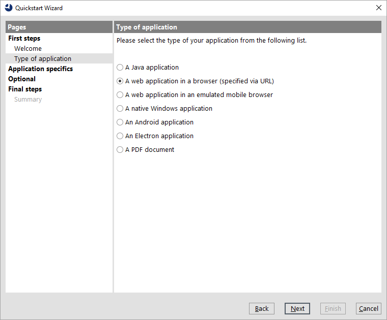
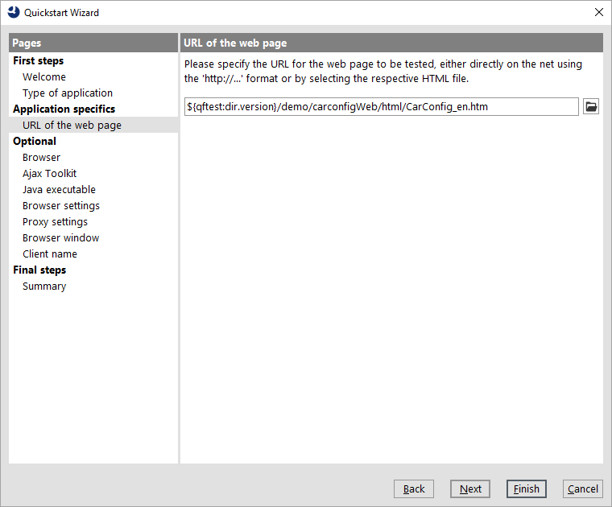
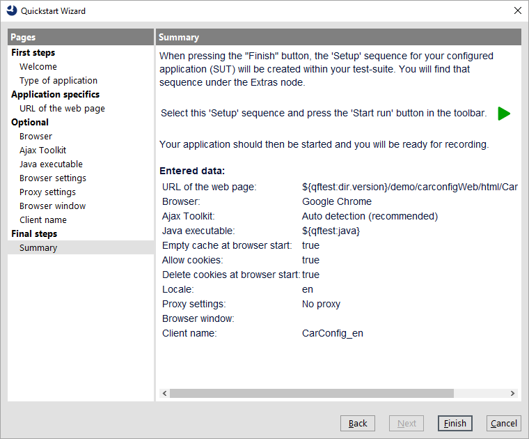
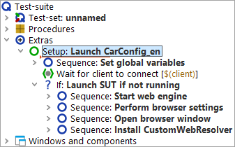
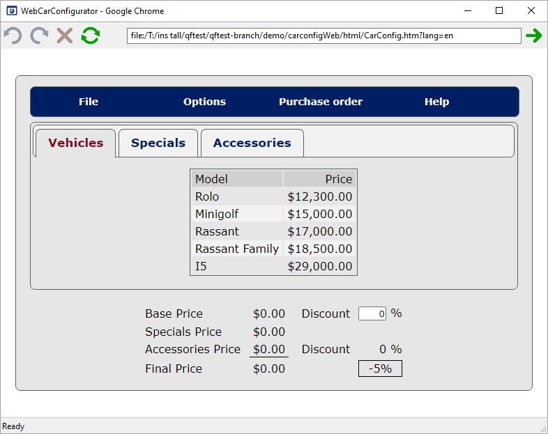

| Version 6.0.3 |
To begin, you need to launch the application from qftest. There is a Quickstart Wizard to help you in creating the respective setup sequence.
The Wizard starts up with a welcome message and some further information.
|
|  |
||
|
| Figure 11.1: The Quickstart Wizard | ||
In step two you can choose the type of application to be tested.
|
|  | ||
|
| Figure 11.2: Type of Application | ||
In step three you are asked for the URL of the web page to be tested.
Typically a http based URL is given here, but we will use the local CarConfig webdemo.
.../qftest-6.0.3/demo/carconfigWeb/html from your
QF-Test installation
CarConfig.htm.
Note In the figure below we used the QF-Test variable
${qftest:dir.version} to address the version specific directory of the
QF-Test installation, which you have already come across in the previous chapter. (Details
on special QF-Test variables can be found in the manual chapter Variables).
|
|  | ||
|
| Figure 11.3: Specification of the URL. | ||
Note Concerning the browser to be used for testing this means the wizard default will be selected (Chrome on Windows and macOS, Firefox on Linux). Just in case this is not possible for any reason, please checkout the optional next wizard steps to select a different browser.
We directly reach the final summary that explains what will happen after closing the wizard and how to continue.
|
|  | ||
|
| Figure 11.4: Final Information | ||
The generated setup sequence Launch CarConfig_en appears in the "Extras" section of your test-suite and looks equivalent to the one we already know for the last chapter (section 10.2).
|
|  | ||
|
| Figure 11.5: Generated Setup Sequence | ||
Now we want to see some action:
You should see the browser appear on your screen soon. First it shows a page that redirects you to the CarConfig demo. As the focus changes back to QF-Test after the execution, the browser might get covered by the test-suite window.
|
|  | ||
|
| Figure 11.6: The WebCarConfigurator demo page in the browser | ||
At the end of this section let's save our test-suite.
Documents in your user home directory.
MyFirstTests.qft.
| Last update: 9/6/2022 Copyright © 2002-2022 Quality First Software GmbH |